Le GIF
Un format qu'il est bien.

Présenté par Benjamin Clay & Damien Alexandre - © 2012 (non en fait on s'en fout)
Se prononce JIF
Et non pas guif
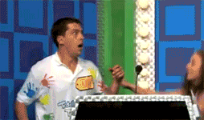Ni JUIF

Média parfait entre la photo et la vidéo
Il ne lui manque que le son
Historique
- 1987 : Compuserve met au point le Graphics Interchange Format
- 1989 : Extension du format pour y mettre plusieurs images et donc créer des animations
- 1995 : Netscape 2 support le Gif Animé
- 2003 : Création de 4Chan
- 2006 : Expiration du dernier brevet, GIF est dans le domaine public !
- 2007 : Création de Tumblr
Souvenir


Compression LZW
- Lempel-Ziv-Welch
- 6 ans après LZ78
- Un exemple !
TOBEORNOTTOBEORTOBEORNOT
192 bits
| TO | <256> |
| BE | <258> |
| EO | <259> |
| OR | <260> |
| RN | <261> |
| OT | <263> |
| TOB | <265> |
TOBEORNOT<256><258><260><265><259><261><263>
144 bits
Algorithme de compression et décompression

KIDDIN'!
Cinemagraph
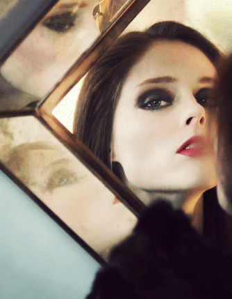 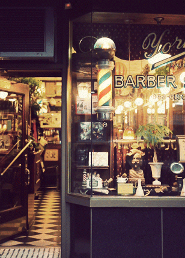
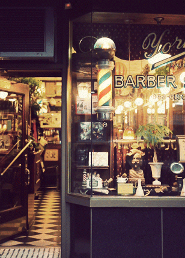
 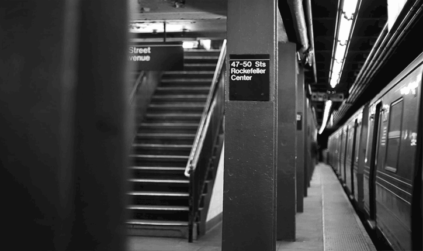
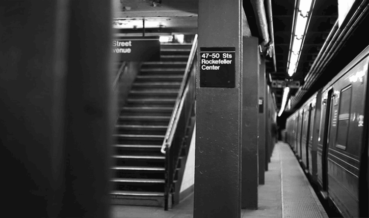
Le GIF comme moyen d'expression
La joie

La tristesse

Le WTF (code crado ?)
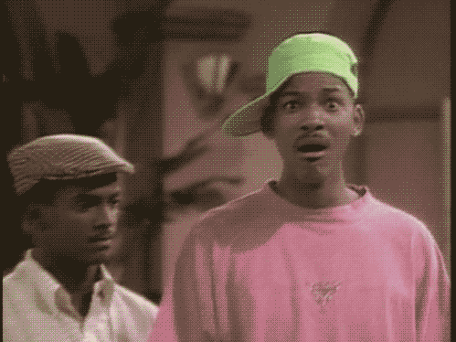L'aberration

Où les trouver ?
Des sites spécialisés
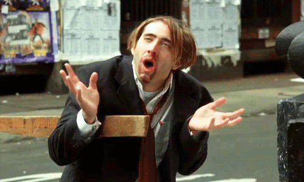Où les trouver ?
Les profondeurs de l'interwebz
Protips : Installer RES !
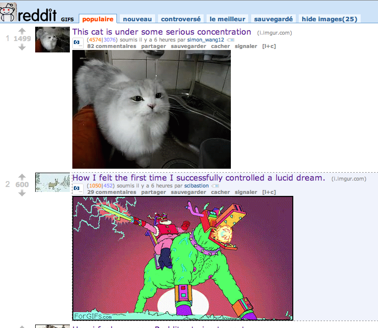Où les trouver ?
Le trou du cul de l'interwebz /!\ NSFW
4chan : /gif, /wsg ou /b/
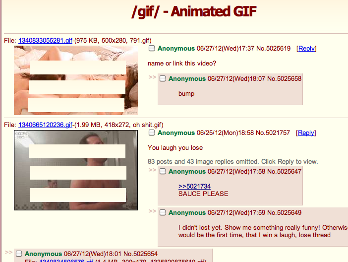Protips : Installer 4chan Chrome Extension !
Appliquer la GIF ATTITUDE© C. Porteneuve
Tous les emails sont "GIFFABLE".
Exemple avec un mail de bienvenue.


Réponse efficace et conviviale
- enfants (les gifs avec des bébés - EPIC)
- équitation (potentiel de LOL avec des poneys)
- poker (potentiel)
Recherche rapide sur reddit et c'est le WIN:

Sans même tomber dans la facilité avec les bébés.
One more thing!
Faire son propre gif !
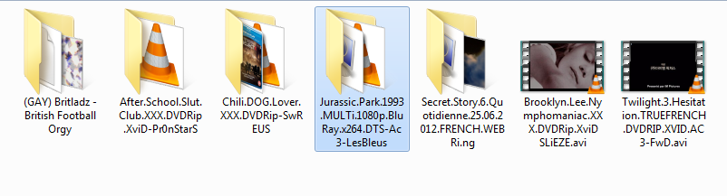Faire son propre gif !
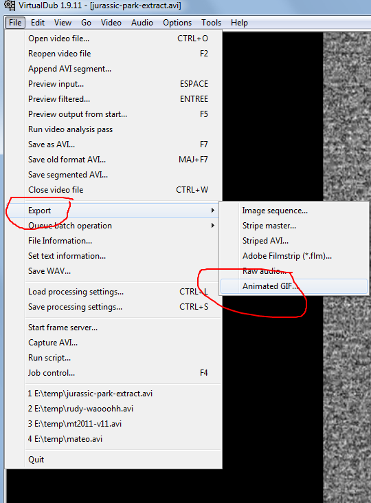Faire son propre gif !

Faire son propre gif !
MERCI \o/ Questions ?
NON on veut des bières !
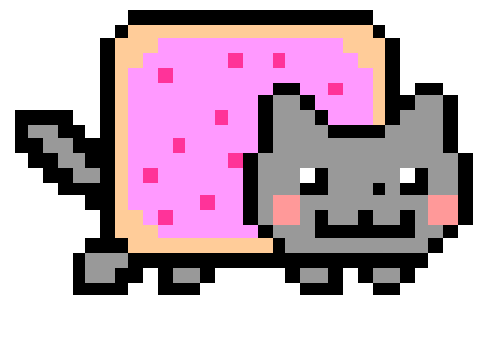